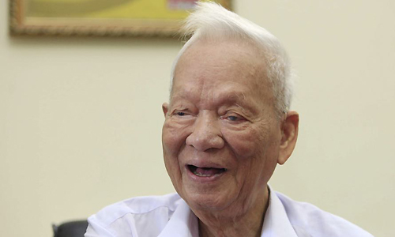
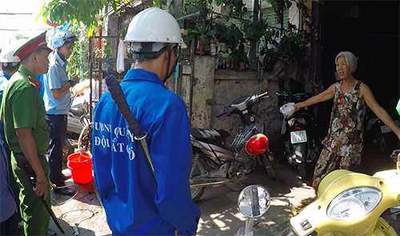

(Theo báo VNExpress.net)
Sau thời gian dài được chăm sóc tại Bệnh viện 108, nguyên Chủ tịch nước, Đại tướng Lê Đức Anh từ trần tối 22/04, hưởng thọn 99 tuổi.
Nhiều tháng trước khi mất, do tuổi cao, sức khỏe Đại tướng Lê Đức Anh suy giảm. Ông được người thân đưa đến Bệnh viện Trung ước quân đội 108 để các bác sĩ tiện chăm sóc. Ông Lê Mạnh Hà hàng ngày ở bên cha.
Ảnh - Nguyên Chủ tịch nước, Đại tướng Lê Đức Anh
Hơn 23h ngày 22/4, nam tài xế lái xe Huyndai trên đường Láng theo hướng Ngã Tư Sở về Cầu Giấy, khi đến cạnh nhà ga đường sắt đô thị Cát Linh - Hà Đông đâm vào một nữ lao công, khiến nạn nhân bị hất văng, tử vong tại chỗ. Tài xế tiếp tục bỏ chạy và lần lượt đâm vào xe máy, ôtô Mercedes chạy cùng chiều trên đường Láng. Theo nhân chứng, "trước khi gây tai nạn trên đường Láng, ôtô Huyndai đã va chạm với hai xe máy khác trên phố Vĩnh Hồ"
Ảnh - Xe Huyndai biến dạng phần đầu sau tai nạn
Trước căn nhà trên đường Mai Thị Lựu (phường Đa Kao), lực lượng chức năng thấy hai chú chó không đeo rọ mõm nên dừng lại xử lý. Chủ nhà liền chạy ra lùa chó chạy vào trong cùng những con chó khác, ngăn không cho bắt. Gia đình này chỉ cung cấp giấy tiêm chủng cho chó từ năm 2016 trở về trước, đàn chó 6 con hiện tại chưa được tiêm
Ảnh - Bị lập biên bản xử phạt 1,4 triệu đồng về hai lỗi chưa tiêm chủng và thả rông chó nơi công cộng, chủ nhà la hét phản đối